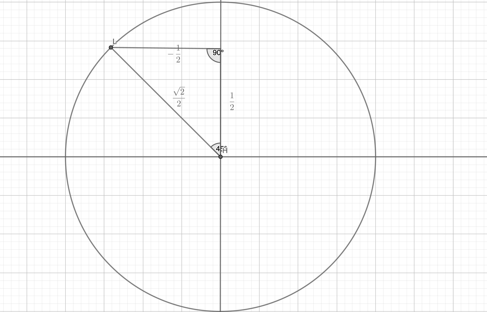

Trigonometry
Angles and Measures
- An angle is the space between two rays that share a common endpoint
- The point where the two rays of an angle meet is called the vertex
- The starting side of an angle is its initial side, and the ending side of an angle is its terminal side
- Positive angles go counterclockwise from the initial side, negative angles go clockwise from the initial side
- An angle is in standard position if its vertex is located at the origin and one ray is on the positive x-axis
Coterminal Angles
- Coterminal angles start from standard position and share the same terminal side
- Two angles that are coterminal satisfy $\angle \beta = \angle \alpha \pm 360^\circ x$
- E.g. they can add up to $0^\circ$, $360^\circ$, $720^\circ$, $1080^\circ$ (or negative equivalents, such as $-360\circ$, $-720^\circ$, $-1080^\circ$, etc.)
- To find the coterminal angle, either add or subtract $360x^\circ$ from an angle (both work so long as $x$ is a whole number)
- $x$ here can be any whole number, so you can use $x=1$ ($360^\circ$), $x = 2$ ($720^\circ$)
- E.g. Let's try to find the coterminal angles of $-520^\circ$
- To find a positive coterminal angle $\theta_+$, then $\theta_+ = (-520^\circ) + 360^\circ x$
- To get a multiple of $360^\circ$ that will make the final coterminal angle positive, we need to set $x \geq 2$
- If we set $x = 2$, we get a result of $200^\circ$, which is our positive coterminal angle
- Let's also find a negative coterminal angle
- To find a negative coterminal angle $\theta_-$, then $\theta_- = (-520^\circ - 360^\circ x$)
- Since $-520^\circ$ is already negative, let's just set $x = 1$
- If we set $x = 1$, we get a result of $-880^\circ$, which is our negative coterminal angle
Complementary and Supplementary Angles
- Complementary angles are two angles that add up to 90 degrees
- A complementary angle must be positive
- This is why no angle above $90^\circ$ has a complement
- Supplementary angles are two angles that add up to 180 degrees
- A supplementary angle must also be positive
- This is why no angle above $180^\circ$ has a complement
Decimal Degrees
- Historically, fractional parts of degrees were expressed in minutes and seconds, e.g. $\theta = 64^\circ\ 32'\ 47''$ instead of decimal degrees (e.g. $\theta = 64.2345^\circ$) - this is called the DMS system
- One minute, represented with the prime (`) symbol, is defined as $\left(\frac{1}{60} \cdot 1^\circ\right)$
- One second, represented with the double prime (``) symbol, is defined as $\left(\frac{1}{3600} \cdot 1^\circ\right)$
- To convert from DMS to degrees we use:
$$ \mathrm{Degrees} = \mathrm{DMS\ Degrees} + \frac{\mathrm{DMS\ Minutes}}{60} + \frac{\mathrm{DMS\ Seconds}}{3600} $$
- To convert from degrees to DMS we use:
$$ \mathrm{DMS\ Degrees} = \mathrm{Degrees} + \frac{\mathrm{Decimal\ part\ of\ degrees}}{60} + \frac{\mathrm{Decimal\ part\ of\ (decimal \ part\ of\ degrees)}}{60} $$
Radians

Take a look at this special circle. What do you notice?
Well, firstly, the radius is 1. So we call the circle a unit circle.
Second, the radius is actually part of a very special arc. We know that the radius is equal to one, which means the circle's circumference is $\pi (2 \cdot 1)$ which is $2\pi$. Meanwhile, the arc length ($s$), radius (1), and central angle ($\theta$) are related like this:
$$ \theta = \frac{s}{r} $$
In our case, since $r = 1$, we simplify to:
$$ \theta = s $$
Wow! So the arc length is also the measure of the angle? How could this be possible?
It makes more sense if we start thinking of angles as units of $\pi$. Let's imagine that the central angle $\theta = 180^\circ$. If that was the case, the arc would be a semicircle, like this:

And since the arc length $s$ of a semicircle is exactly half of the circumference of a full circle, we can say that:
$$ s = \frac{1}{2}C = \frac{1}{2}\pi 2r = \pi r $$
Based on our formula $\theta = s$ (because our radius is 1), we can also find that:
$$ \theta = s = \pi r $$
And again, since we know that $r = 1$, this simplifies to:
$$ \theta = (\pi \cdot 1) = \pi $$
So we find that $\theta$ is equal to $\pi$ degrees. We now have a new unit to measure angles: the radian.
We also know that a radian can be roughly defined as degrees expressed in units of $\pi$ rather than decimal units. $2 \pi$ radians is a full 360 degrees, $\pi$ radians is 180 degrees, and we can keep dividing so on. Instead of counting from 0 to 360 degrees, in radians, we count from 0 to $2\pi$. And since $\pi$ radians is equal to $180^\circ$, 1 radian is also equal to $\frac{180^\circ}{\pi}$ which resolves to approximately $57.3^\circ$.
Rules of radians
Radians are a unit of measurement for angles. We can express angles in:
- $\pi$ form, where we state radians in terms of $\pi$ (e.g. $2\pi \mathrm{\ rad.} = 360^\circ$)
- Exact form, where we state radians in terms of decimal units (e.g. $1.3\mathrm{\ rad.}$)
$$ 1 \mathrm{\ radian} = 1^\circ \cdot \left(\frac{\pi}{180}\right) $$
$$ 1^\circ = 1 \mathrm{\ radian} \cdot \left(\frac{\pi}{180}\right) $$
$$ \pi \mathrm{\ rad.} = 180^\circ $$
| Radians ($\pi$) | Radians (exact) | Degrees |
|---|---|---|
| 0 radians | 0.0 radians | 0 degrees |
| $\frac{\pi}{2}$ radians | ~1.57 radians | 90 degrees |
| $\pi$ radians | ~3.14 radians | 180 degrees |
| $\frac{3\pi}{2}$ radians | ~4.7 radians | 270 degrees |
| $2\pi$ radians | ~6.28 radians | 360 degrees |
Counting in Radians
Imagine you were given an angle $\theta = \frac{9\pi}{4}\mathrm{\ rad.}$ How would you be able to draw it?
Well, we know that $\frac{9\pi}{4}$ is just $\frac{\pi}{4}$ repeated 9 times. And $\frac{\pi}{4}$ is just a 45 degree angle. So let's try counting in 45 degrees around the graph:
(Add gif of counting in 45 degrees 9 times to get to the final position)
Drawing radians in Standard Position
We can use the rules of radians and coterminal angles to help us draw radians.
For instance, let's try to draw $\theta = \frac{5\pi}{2}$. We know that $\frac{5\pi}{2}$ is equal to $\frac{4\pi}{2} + \frac{\pi}{2}$, so:
$$ \theta = 2\pi + \frac{\pi}{2} $$
So, we'll need to rotate 360 degrees once (because $2\pi$ is one full revolution), and then we need to rotate by 1/4 of a revolution (because $\frac{\pi}{2}$ is 90 degrees)
Now for a harder example. Let's try to draw 4 radians on the graph.
Finding coterminal angles for radians
Add 2 pi, minus 2 pi...
Arc length
If we're using degrees, the arc length $s$ is given by:
$$ s = \frac{\theta}{360^\circ} \cdot 2 \pi r $$
If we're using radians, the arc length is given by:
$$ s = r \theta $$
where $\theta$ is in radians.
Linear and angular speeds
Linear speed is distance travelled over time elapsed. We measure it in units of distance per time interval (e.g. meters per second)
Linear speed is given by:
$$ v = \frac{\mathrm{arc\ length}}{\mathrm{time}} = \frac{s}{t} $$
A revolution is the fraction of a circumference travelled over time elapsed. We often abbreviate this as RPM (revolutions per minute) or RPS (revolutions per second). To get from linear speed to revolutions, we use:
$$ \mathrm{revolutions} = \frac{v}{\mathrm{circumference}} $$
Angular speed is the angle displaced over time elapsed. We measure it in units of angles per time interval (e.g. degrees per second)
Angular speed in degrees is given by:
$$ \omega = \frac{v}{\mathrm{circumference}} \cdot 360^\circ = \mathrm{revolutions} \cdot360^\circ $$
Similarly, angular speed in radians (e.g. radians per second) is given by:
$$ \omega = \frac{v}{\mathrm{circumference}} \cdot 2 \pi \mathrm{\ rad.} = \mathrm{revolutions} \cdot 2\pi \mathrm{\ rad.} $$
The Six Trigonometric Functions
Definitions
$$ \sin \theta = \frac{\mathrm{opposite}}{\mathrm{adjacent}} $$
$$ \cos \theta = \frac{\mathrm{adjacent}}{\mathrm{hypotenuse}} $$
$$ \tan \theta = \frac{\mathrm{opposite}}{\mathrm{hypotenuse}} = \frac{\sin \theta}{\cos \theta} $$
The reciprocal trigonometric functions are the normal trig functions but "flipped over", and they look like this:
$$ \csc \theta = \frac{1}{\sin} $$
$$ \sec \theta = \frac{1}{\cos} $$
$$ \cot \theta = \frac{1}{\tan} $$
Special Right Triangles
In the 45-45-90 triangle, the sides are in the ratio $a: a\sqrt{2}:a$, where two sides are congruent, and the hypotenuse is $a \sqrt{2}$:

In the 30-60-90 triangle, the sides are in the ratio $a:2a:a\sqrt{3}$, where $a$ is the shortest side, and the hypotenuse is $2a$:

Trigonometric Identities
We already know that $\csc$, $\sec$, and $\cot$ are reciprocals of the three base trigonometric functions, $\sin$, $\cos$, and $\tan$. Additionally, there are several others that are helpful to know:
$$ \tan \theta = \frac{\sin \theta}{\cos \theta} $$
$$ \cot \theta = \frac{\cos \theta}{\sin \theta} $$
Based on the pythagorean theorem, we can find a few others:
$$ \sin^2 \theta + \cos^2 \theta = 1 $$
$$ 1 + \tan^2 \theta = \sec^2 \theta $$
$$ 1 + \cot^2 \theta = \csc^2 \theta $$
Here, $\sin^2 \theta$ is equal to $(\sin \theta)^2$.
If you forget these, it's okay! You can manually derive all of them from the unit circle, which we'll explore next.
The Unit Circle
Imagine a circle with a radius of exactly one radius. It would look something like this:

Why would this be helpful, you ask? Well, a unit circle helps us to find the exact values of the trigonometric functions.
Take a look at the right triangle inscribed within the unit circle:

That's interesting, isn't it? If the angle is 30 degrees, then we know that $x$, $y$, and the radius form a 30-60-90 triangle. From there, we can calculate the values for all 6 trigonometric functions, from the sides of the triangle. And, we know that the point $\frac{\pi}{6}$ on the unit circle's circumference must therefore equal $\left(\frac{\sqrt{3}}{2}, \frac{1}{2}\right)$.
What if the angle is 45 degrees? Same deal, just with a 45-45-90 triangle:

So we know that the point $\frac{\pi}{4}$ must equal $\left(\frac{\sqrt{2}}{2}, \frac{\sqrt{2}}{2}\right)$.
And we can do more, because we can use the same method to find the positions of points in other quadrants, too. For example:

Here, we've found that the point $-\frac{2\pi}{3}$ is equal to $\left(-\frac{1}{2}, -\frac{\sqrt{3}}{2}\right)$. In fact, we can just remember a simple rule to "translate" the trig function measures from one quadrants to all the other ones:

| Quadrant | Sign |
|---|---|
| Quadrant I | All are positive |
| Quadrant II | Sine is positive, rest are negative |
| Quadrant III | Tangent is positive, rest are negative |
| Quadrant IV | Cosine is positive, rest are negative |
Finally, for whoever just wants to have a good quick reference, this is a fully labelled unit circle:

Reference angles
For any angle $\dfrac{k\pi}{3}$, the reference angle is $\dfrac{\pi}{3}$ or $60^\circ$.
For any angle $\dfrac{k\pi}{4}$, the reference angle is $\dfrac{\pi}{4}$ or $45^\circ$.
For any angle $\dfrac{k\pi}{6}$, the reference angle is $\dfrac{\pi}{6}$ or $30^\circ$.
Finding the trigonometric functions from a point on the unit circle
Let's say you were given a point $t = -\frac{5\pi}{4}$. How can we find the 6 trig functions from it?
Well, the first part we know is that $-\frac{5\pi}{4} = -225^\circ$, which means that it will land in Quadrant 2. So, the $x$ coordinate will be negative, and the $y$ coordinate will be positive.
We also know that the reference angle is $\frac{\pi}{4}$, from which we can draw a 45-45-90 triangle like this:

Now we can use our special right triangle to find that:
$$ \sin \left(-\frac{5\pi}{4}\right) = \frac{\sqrt{2}}{2} $$
$$ \cos \left(-\frac{5\pi}{4}\right) = -\frac{\sqrt{2}}{2} $$
$$ \tan \left(-\frac{5\pi}{4}\right) = -1 $$
There we go!
Another example know - what if the point $t = 2\pi$?
sine is y, cos is x, tan is sine/cosine
The trig song
Mr. Darnbrook, wherever you are - countless students will thank you for this song you taught me 5 years ago...
One, two three!
Three, two, one!
Two under the bar!
Square root all that's not one!
Square root of three over three!
One, then square root of three!
Now that you know the song!
You can sing it again, to me!
And this is how you get to this:
| 30 degrees | 45 degrees | 60 degrees | |
|---|---|---|---|
| sine | $\frac{1}{2}$ | $\frac{\sqrt{2}}{2}$ | $\frac{\sqrt{3}}{2}$ |
| cosine | $\frac{\sqrt{3}}{2}$ | $\frac{\sqrt{2}}{2}$ | $\frac{1}{2}$ |
| tangent | $\frac{\sqrt{3}}{3}$ | $1$ | $\sqrt{3}$ |
Explanation:
"One, Two, Three" is the first row of the table
"Three, Two, One" is the second row
"Two under the bar" means to make 2 the denominator of every number (so 1 will become $\frac{1}{2}$, 2 will become $\frac{2}{2}$, you get the idea)
"Square root all that's not one" means to add a square root to every number (in rows 1) and 2) that, as you might have guessed, is not 1)
"Square root of three over three" is for the first column of the third row ($\tan 30^\circ$)
"One, then square root of three" is for the second and third columns of the third row ($\tan 45^\circ$ and $\tan 60^\circ$)
And you've got that done!